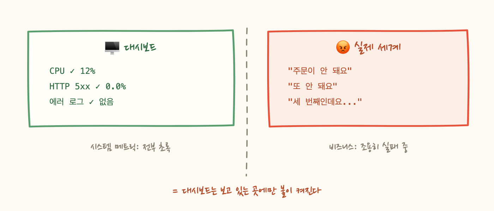
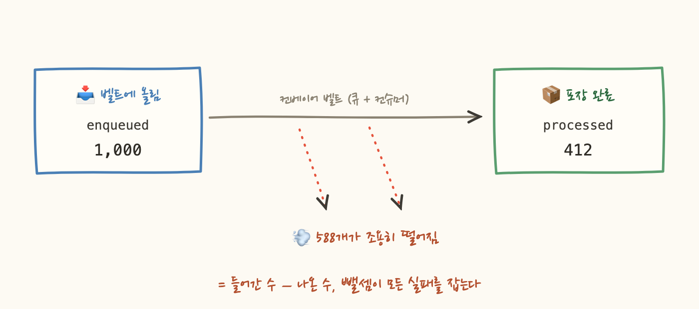

고객사에서 문의가 옵니다. "주문이 가끔 안 돼요." 대시보드를 봅니다. CPU 평온, 메모리 여유, HTTP 5xx 없음, 에러 로그 없음. 트레이스를 몇 개 열어봐도 전 구간 정상 latency예요. 그래서 답장을 보냅니다 — "저희 쪽은 이상 없습니다. 네트워크 문제 아닐까요?"
그리고 일주일 뒤, 같은 문의가 세 번째로 도착합니다. 이번엔 건수까지 붙어서요. 모든 지표가 초록불인데 실제로는 실패하고 있다 — 이게 어떻게 가능한 걸까요?
범인 찾기의 시작은 주문 API의 구조였어요. 이 API는 주문 요청을 받으면 검증만 하고 메시지 큐에 넣은 다음 바로 200을 반환합니다. 실제 주문 처리 — 재고 차감, 결제, 알림 — 는 그 뒤 컨슈머가 큐에서 꺼내서 하고요. 장애가 클라이언트한테 전파되지 않게 하고, 트래픽 스파이크를 큐가 흡수하게 하는 좋은 설계죠.
그런데 이 설계의 대가가 있어요. 동기 응답 코드는 비동기 처리의 성공을 증명하지 못합니다. 200은 "접수했다"는 뜻이지 "처리했다"는 뜻이 아니에요. HTTP 5xx율이라는 지표는 접수 창구만 지켜보고 있었고, 실패는 창구 뒤편에서 나고 있었던 겁니다.
그럼 왜 대시보드는 몰랐을까요? 그 대시보드에 있던 지표를 나열해보면 — CPU, 메모리, 디스크, HTTP 응답 코드, 응답 시간. 전부 시스템 메트릭이에요. 인프라가 건강한지는 말해주지만, 비즈니스가 굴러가는지는 모르는 지표들이죠. 서버는 아주 건강한 상태로 주문을 버리고 있었으니까요.
그래서 "잘 설계된 애플리케이션 메트릭이 가장 유용한 메트릭 신호"라는 말이 나옵니다. 애플리케이션 메트릭은 도메인의 언어로 세는 지표예요 — 주문이 몇 건 접수됐고, 몇 건 완료됐는가. 이 두 숫자만 있었어도 이 장애는 초록불 뒤에 숨지 못했을 겁니다.

실패 지점은 컨슈머였습니다. 그런데 여기서 두 번째 반전 — 실패한 메시지가 모이도록 만들어둔 DLQ(Dead Letter Queue)도 끝까지 0이었어요. 컨슈머 코드가 이렇게 생겼었거든요:
예외를 잡아서 로그만 남기고 정상적으로 ack 해버리니, 브로커 입장에선 실패한 메시지가 아니에요. 재시도도 없고 DLQ로 갈 일도 없죠. 그럼 에러 로그에는 남지 않았냐고요? 남았습니다 — 다만 아무도 그 로그에 알람을 걸어두지 않았고, 초록불 대시보드를 믿는 동안 아무도 검색하지 않았을 뿐이에요. 장애는 요란한 에러가 아니라 조용한 증발로 옵니다.
이제 이 장애를 못 숨게 만드는 메트릭을 설계해보죠. 파이프라인을 공장 컨베이어 벨트라고 생각하면 답이 보여요. 벨트에 올린 상자 수와 포장 완료된 상자 수 — 딱 두 군데만 세면 됩니다.
중요한 건 왜 실패 카운트가 아니라 성공 카운트냐는 거예요. 예외 카운터는 실패 모드를 미리 예측한 곳에만 심을 수 있어요. catch 블록마다 넣어야 하고, 예외 없이 조용히 리턴해버리는 버그는 영원히 못 잡죠. 반면 성공 카운트는 어떻게 죽었는지 몰라도 "안 나왔다"는 걸 알려줍니다. 실패는 열거할 수 없지만, 성공은 정의할 수 있어요. 그래서 성공을 세고 실패는 뺄셈으로 잡는 겁니다.

이 설계를 알람으로 완성하면 한 줄이에요:
두 가지 실무 디테일이 있어요. 첫째, 절대값이 아니라 최근 N분 창의 증가량으로 비교합니다. 카운터는 앱이 재시작하면 0으로 리셋되니까요. 둘째, 임계치가 0이 아닌 이유 — 벨트 위를 아직 굴러가는 중인(in-flight) 상자가 항상 몇 개는 있어서, 차이가 "조금 있는" 건 정상이고 "계속 벌어지는" 게 장애 신호이기 때문이에요.